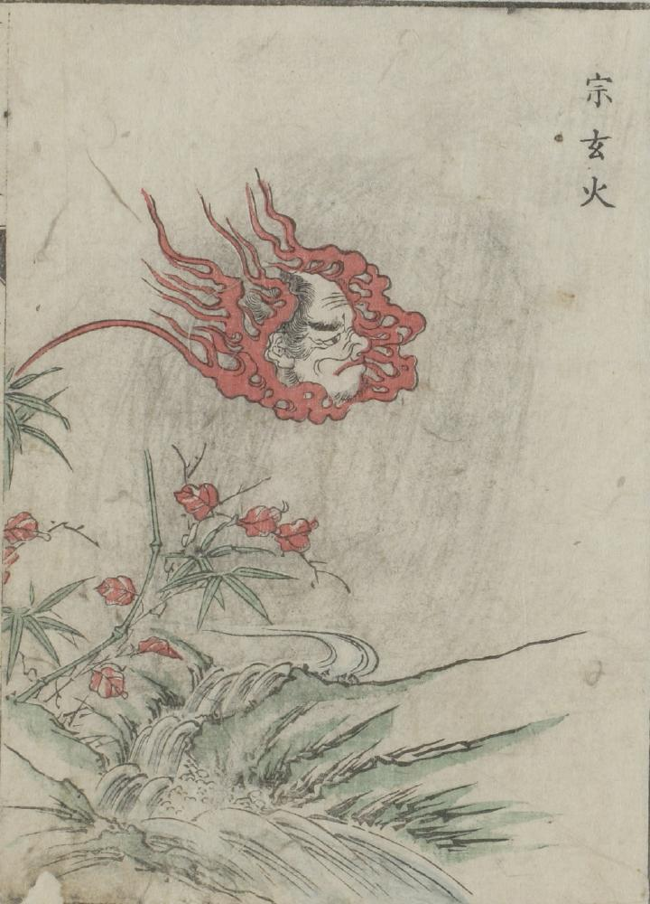

← 图鉴索引
宗玄；ソウゲン，怪火；カイカ

火をまとい浮遊する男の頭部が川面を渡っている。
出典：親書誌：U426_nichibunken_0051：怪物画本；カイブツエホン／日付：2006／資源識別子：U426_nichibunken_0051_0013_0000
Copyright (c)2010- International Research Center for Japanese Studies, Kyoto, Japan. All rights reserved.